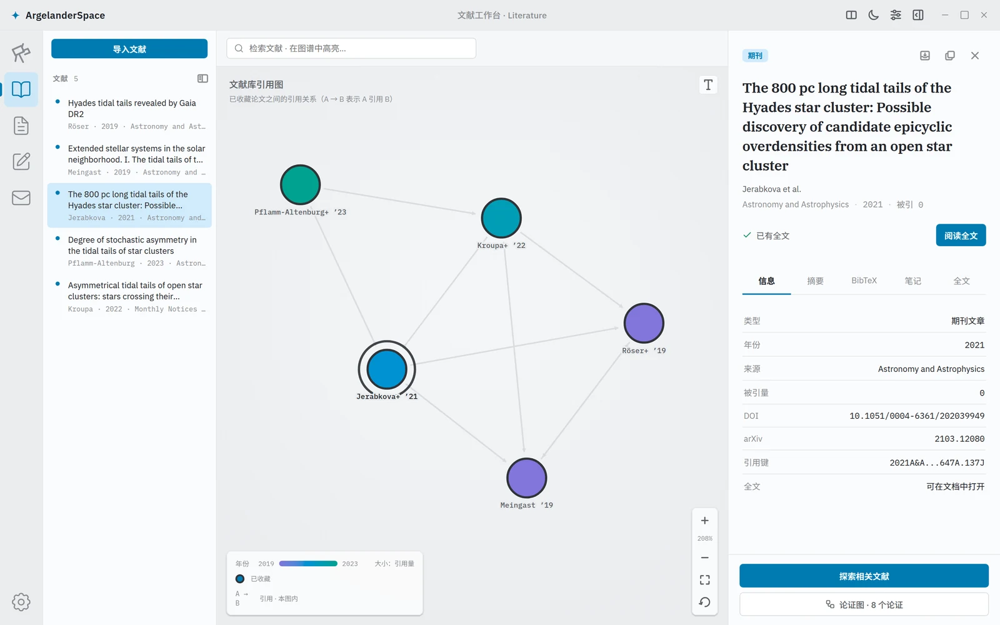

Part 1
什么是论证图
一个论证，六个零件
论文里的每个结论都是一个论证。按 Toulmin 模型拆开：Claim、Grounds、Warrant 缺一不可，另外三个让它经得起追问。
右图是 Küpper 等 2010 年《Tidal tails of star clusters》的一个 End Argument。不是每个论证六样都有：这一个没有 Qualifier。点任一块看它是什么。
论证连成一张图
一个论证的 Claim，会成为另一个论证的 Grounds、Warrant 或 Rebuttal。整篇论文就是一张有向无环图：Argument DAG。
底层是 Native：只靠引用、定律、常识，不靠本文的计算。顶层是 End：论文最终交付的东西，本文里没有别的论证再用它。
很多篇论文，接成一个库
论文 B 引用了论文 A，于是 A 的论证接进 B 的某个论证里。沿着引用把一组论文的 DAG 拼起来，就是 Argument Library。
从一篇论文的结论出发，可以一路往下追到它真正依赖的证据，即使那证据在别的论文里。
在库上加一层猜想
Conjecture 是 Grounds 还不存在的论证。它的 Claim 可判定：哪个量、和谁比、往哪个方向；它的 Rebuttal 事先写明什么结果会推翻它。
每个猜想挂在一个 Verification 上：模拟、测量或作图。一个 Verification 可以同时判定几个猜想。跑完由你判断：成立、被推翻、没做。这就是一个 Round。
Part 2
八个技能，一条流水线
Part 3
这套技能的专用工作台
ArgelanderSpace
sci-skills 的每一步，在 ArgelanderSpace 里都有对应的界面。智能体去跑，你在同一个地方看、改、拍板，数据都在你自己的电脑上。

两个入口，同一个项目
Claude Code 等通过 argelanderspace 命令和自带插件进入项目。
同一套操作，从哪个入口进都是同一个结果。
知道你正在读、计划、写什么，问「这张图」不用先交代背景。
截图为教程示例项目，其中论文为 Jerabkova et al. 2021，arXiv:2103.12080，CC BY 4.0。
Part 4
展望：专家语言模型
我们正在训练一系列专家语言模型，让它们接进这条工作流，克服通用大语言模型的诸多问题。